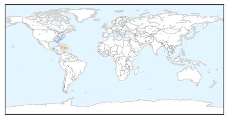
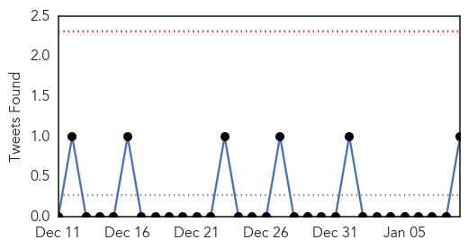
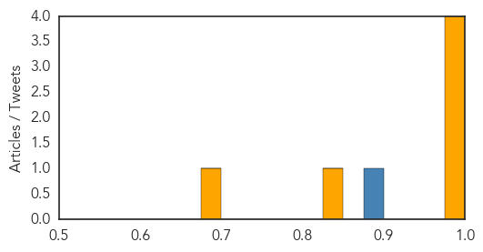

Unknown
30-Day Web Trend
0 alerts, 0 warnings

30-Day Twitter Trend
0 alerts, 0 warnings

Article Locations
Article Confidences

Top Articles:
Top Tweets:
- 0.920
- would most people know flu infection vs non-flu virus infection vs bacterial?
- 0.841
- RT: Have been in flu season for 7 weeks now. Still mostly H3N2 viruses; typically means a more severe season. Avg. flu seaso…
- 0.802
- Have been in flu season for 7 weeks now. Still mostly H3N2 viruses; typically means a more severe season. Avg. flu season about 13 weeks.
- 0.710
- Flu antivirals are underused. For high risk people, treatment can mean difference between milder illness & hospital stay.
- 0.633
- Color coded flu: Deep purple = widespread flu transmission. http://t.co/1iEqHKyvxr
- 0.606
- Clinicians: Hospitalized and high risk flu patients with suspected flu should receive antiviral treatment ASAP. http://t.co/B0CFybI7y2
- 0.557
- Is it the flu or is it a cold? Symptoms such as fever, body aches, tiredness, and cough are more common and intense with the flu.
- 0.549
- Flu antiviral drugs work best when started within 2 days of flu symptoms. http://t.co/u8DkedBfEe
- 0.534
- Antiviral medications are an important adjunct to flu vaccine in the fight against flu. http://t.co/h7iDtdgfj7
- 0.519
- Flu season near peak in Canada, Public Health Agency says. Drifted H3N2 viruses causing vast majority of cases. http://t.co/wK9xR7yTfx
- 0.509
- People should still get flu vaccination if they have not yet this season. Vaccination is the best way to prevent flu.
- 0.504
- RT: Flu antiviral drugs work best when started within 2 days of flu symptoms. http://t.co/u8DkedBfEe
Influenza
30-Day Web Trend
1 alerts, 0 warnings

30-Day Twitter Trend
0 alerts, 0 warnings

Article Locations

Article Confidences
Top Articles:
- 0.999
- Mississippi flu
- 0.997
- 7 flu deaths reported in ND; F-M hospitals ask people with flu-like symptoms to delay patient visits
- 0.995
- First flu death expected to prompt even more doctor visits
- 0.994
- Report Confirms: Fourth Child in Minnesota Dies with Flu
- 0.848
- Digging Deeper: UW Research team starts revolutionary study duri
- 0.677
- Avian flu discoveries unlikely to affect Alaska
Top Tweets:
- 0.892
- RT: Weekly threat report: the start of influenza season, cases of botulism in people who inject drugs and Ebola update http://t…
- 0.555
- AFD Blog `@CDCgov HAN: Update On Influenza Season & Antiviral Recommendations' flu http://t.co/i6269X3NeQ